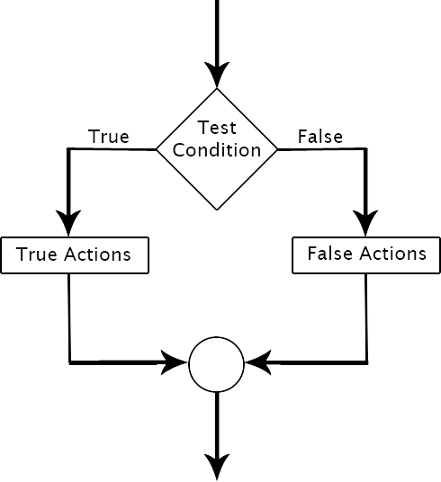
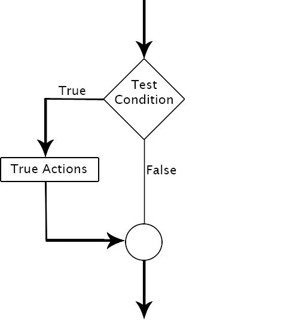

Decision Structure
The decision structure of C language is used to make selections. Selection allows us to choose options from two or more options available within the program. In C language, decision structure allows us to perform pre-defined actions based on the results of one or more conditions.
The Two-Way Selection
A two-way selection in C language represents a conditional statement that can be evaluated as true or false by the compiler. The true answer leads to the execution of one or more action statements. In case answer being false, the other set of action statement is executed.

Figure: A Two-Way selection Flowchart
The Simple If Statement
A simple if statement represents a case where an action is to be taken only when specified condition is true and no action is to be taken in case of false condition.
Syntax:
if(test_condition) Action Statement;

Figure: Logical flow of a Simple If Statement
The If-Else Statement
The if-else statement is an improvement over the simple if statement. In the simple if statement, there is only one block of action statements. This block gets executed when the test condition is evaluated to be true. In case the test condition is evaluated to be false, no action is taken. This can be achieved by making use of the if-else statement.
Syntax:
if(test_condition)
{
True actions statements;
}
else
{
False action statements;
}
Figure: Logical Flow of the If-Else Statement
Increment and Decrement Operators
C language provides two unary operators, namely, ++ and --, for the purpose of increment and decrement of value by 1. The expression formed by using increment or decrement operator is termed as unary expression, as these operators require only one operand.
Syntax:
++identifier; //Pre-increment identifier++; //Post-increment --identifier; //Pre-decrement identifier--; //Post-decrement
Example:
#include<stdio.h>
#include<conio.h>
void main()
{
int a=6,b;
clrscr();
b = --a + --a;
printf("a = %d\tb = %d\n",a,b);
b = a-- + a--;
printf("a = %d\tb = %d\n",a,b);
b = ++a + ++a;
printf("a = %d\tb = %d\n",a,b);
b = a++ + a++;
printf("a = %d\tb = %d",a,b);
getch();
}
Output:
a = 4 b = 8
a = 2 b = 8
a = 4 b = 8
a = 6 b = 8
Conditional Operators
C language provides us an operator known as conditional operator ternary operator for condition checking. It consists of combination of two symbols, that is ? and :.
Syntax:
(condition) ? (true statement) : (false statement);
Logical Operator
The logical operators are used to compare Boolean expressions. The result of the Boolean is always Boolean. C language provides us three logical operators, namely, AND, OR, and NOT.
| SYMBOL | NAME | No. of Operands Required |
|---|---|---|
| && | Logical AND | Two |
| || | Logical OR | Two |
| ! | Logical NOT | One |
Syntax:
Expression_1 && Expression_2 Expression_1 || Expression_2 !(Expression)
Truth Table of Logical Operations:
| Return Value of Expression 1 | Return Value of Expression 2 | Expression 1 && Expression 2 | Expression 1 || Expression 2 | ! (Expression 1) |
|---|---|---|---|---|
| 0 | 0 | 0 | 0 | 1 |
| 1 | 0 | 0 | 0 | 0 |
| 0 | 1 | 0 | 1 | 1 |
| 1 | 1 | 1 | 1 | 0 |
Bitwise Operators
C language allows us to operate directly at bit level using six operators.
| SYMBOL | NAME | Usage | No. of Operands required |
|---|---|---|---|
| & | Bitwise AND | To perform AND operation on two bits | Two |
| | | Bitwise OR | To perform OR operation on two bits | Two |
| ~ | Bitwise NOT | To perform NOT operation on two bits | One |
| ^ | Bitwise Exclusive OR | To perform XOR operation on two bits | Two |
| << | Left Shift | First operand to be shifted left the number of bits specified by the second operand | Two |
| >> | Right Shift | First operand to be shifted right the number of bits specified by the second operand | Two |
Truth Table for Bitwise Operations:
| A | B | ~A | ~B | A & B | A | B | A ^ B |
|---|---|---|---|---|---|---|
| 0 | 0 | 1 | 0 | 0 | 0 | 0 |
| 0 | 1 | 1 | 0 | 0 | 1 | 1 |
| 1 | 0 | 0 | 1 | 0 | 1 | 1 |
| 1 | 1 | 0 | 0 | 1 | 1 | 0 |
Special Operators
C language provides us with two unformatted functions gets() and puts() to input and output a string. A string in C is represented as asset of characters that is always terminated with a null character.
| CATEGORY | SYMBOL | NAME | USAGE |
|---|---|---|---|
| Comma | , | Comma | To separateidentifiers at the time of declaration |
| Size Of | sizeof() | Size Of | To check the size of the data type |
| Pointer | & | Ampersand | To identify address or refference of an identifier |
| * | indirection | To provide indirection to pointer identifier | |
| Member Selction | . | Dot | To access member of structure or union |
| -> | member by | To access members of structure or union when pointer type identifier of a structure or a union is defined |
Precedence & Associativity of Operators
| Operator symbol | Usage | Precedence | Associativity |
|---|---|---|---|
| ( ) | Function call | ||
| [ ] | Array expression | ||
| -> | Structure Operator | First | Left to Right |
| . | Structure Operator | ||
| + | Unary Plus | ||
| - | Unary Minus | ||
| ++ | Increment | ||
| -- | Decrement | ||
| ! | Logical NOT | Second | Right to Left |
| ~ | Bitwise NOT | ||
| * | Pointer Operator | ||
| & | Address Operator | ||
| sizeof() | Size Of Operator | ||
| * | Multiplication | ||
| / | Division | Third | Left to Right |
| % | Modulo Division | ||
| + | Binary Addition | Fourth | Left to Right |
| - | Binary Substraction | ||
| << | Left Shift | Fifth | Left to Right |
| >> | Right Shift | ||
| < | Less than | ||
| <= | Less than Equal to | Sixth | Left to Right |
| > | Greater than | ||
| >= | Greater than Equal to | ||
| == | Equal to | Seventh | Left to Right |
| != | Not Equal to | ||
| & | Bitwise AND | Eighth | Left to Right |
| ^ | Bitwise XOR | Ninth | Left to Right |
| | | Bitwise OR | Tenth | Left to Right |
| && | Logical AND | Eleventh | Left to Right |
| || | Logical OR | Twelfth | Left to Right |
| ? : | Conditional Operator | Thirteenth | Right to Left |
| /=, %=, &=, *=, -=, +=, ^=, |=, <<=, >>= | Assignment Operator | Fourteenth | Right to Left |
| , | Comma Operator | Fifteenth | Left to Right |